الانتربرونور الصغير
حكاية مشروع صيفي، ودليل اللعب
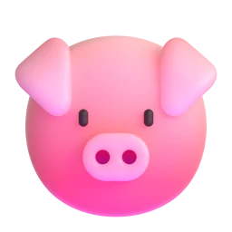
adam.ahmedhaz.com/littlebreneur
الانتربرونور الصغير
The Little Entrepreneur
حكاية عن ملك ويوسف وجدّو، ودليل للعبة المجانية.
مكتوبة للأطفال من 8 إلى 12 عامًا، وللكبار الذين يقرؤون معهم.
الصور: Microsoft Fluent Emoji (رخصة MIT). الخط: Baloo Bhaijaan 2 (رخصة SIL المفتوحة).
مجاني للطباعة والمشاركة مع العائلة والأصدقاء والمدارس.
© 2026 adam.ahmedhaz.com
إلى الكبار
لهذا الكتاب جزءان. تتبع الحكاية ملك ويوسف خلال صيف واحد مع كشك عصير. وينتهي كل مشهد بفكرة من أفكار جدّو عن المال: التكلفة والسعر والربح والادّخار والأمانة والراحة.
ويشرح الجزء الثاني طريقة لعب «الانتربرونور الصغير»، اللعبة المجانية التي خرجت منها الحكاية. تعمل في أي متصفح وعلى الهواتف، بلا إعلانات ولا حسابات ولا مشتريات.
طريقة مقترحة: قراءة مشهد واحد معًا، ثم الحديث عن فكرة جدّو، ثم ترك الطفل يجرّبها في اللعبة. وبعد الحكاية صفحة لتخطيط مشروع صغير حقيقي.
المحتويات
- الجزء الأول: الحكاية4
- أفكار جدّو16
- دورك: خطة مشروع صغير17
- الجزء الثاني: طريقة لعب الانتربرونور الصغير18
- المشاريع الأربعة26
- كلمات مهمة27
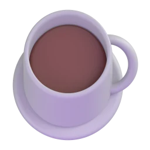
الصيف يبدأ
في أول يوم من الصيف، كانت لدى ملك ويوسف خطة. قالت ملك: «عيد ميلاد ماما في آخر الصيف، ونريد أن نشتري لها هدية حقيقية.» أفرغ يوسف جيوبه: 15 عملة، وتنهّد: «هذا لا يكفي.» وضع جدّو كوب الشاي وقال: «إذن لنكسب الباقي. ماذا يريد الناس هنا في يوم حار؟» فصاحا معًا: «شيئًا باردًا!»
كل مشروع يبدأ بشيء يريده الناس.
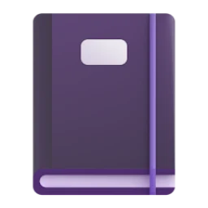
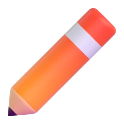
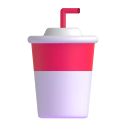
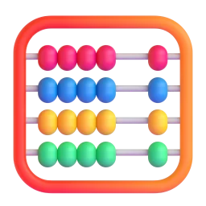
كم يكلّف الكوب الواحد؟
فتح جدّو دفتره القديم وقال: «ليمون وسكر وماء وكوب ورقي. لنحسب.» جمعا كل شيء وقسماه على عدد الأكواب. قال يوسف: «الكوب الواحد يكلّفنا عملة واحدة.» فقال جدّو: «هذه هي التكلفة. كل كوب نصنعه ندفع ثمنه، حتى لو لم يشتره أحد.»
التكلفة هي ما ندفعه لنصنع الشيء.
اختيار السعر
عملتان أم 3 أم 5 للكوب؟ قال يوسف: «5! نقود أكثر!» هزّت ملك رأسها: «بـ5 سيتوقف عدد أقل من الناس. وبعملتين سيأتي كثيرون، لكن لن يبقى لنا من كل كوب إلا عملة واحدة.» ابتسم جدّو: «جرّبا 3. سعر عادل لهم، وعادل لكما.» وكتبا على اللافتة بخط كبير: 3 عملات.
السعر الغالي يجلب زبائن أقل، والرخيص يجلب ربحًا أقل من كل كوب.
يوم السوق!
يوم السبت صنعا 12 كوبًا. كانت الشمس مشرقة، والجيران في الخارج. وقبل الظهر بِيع 11 كوبًا. عدّ يوسف النقود مرتين: 33 عملة، وهتف: «صرنا أغنياء!» قال جدّو: «على مهلك. كم كلّفت الأكواب؟» «12 عملة.» «إذن كم بقي؟»
عدّ النقود التي دخلت نصف الحكاية فقط.
الربح
كتبت ملك على ظهر اللافتة: دخلت 33 عملة، وخرجت 12 عملة، والربح 21 عملة. قال جدّو: «الربح هو ما يبقى بعد دفع كل شيء.» ووضع يوسف العملات الـ21 في الحصّالة ببطء شديد، واحدة بعد واحدة.
الربح = النقود الداخلة − النقود المصروفة.
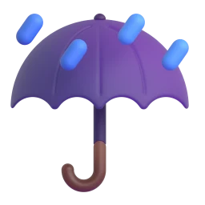
سبت ماطر
في السبت التالي صنعا 20 كوبًا. ثم جاءت الغيوم. توقّف 6 أشخاص فقط، وكانوا يريدون شيئًا دافئًا. وفي المساء سُكب 14 كوبًا من العصير في الحوض. قال يوسف بهدوء: «لقد دفعنا ثمنها.» فقالت ملك: «في المرة القادمة ننظر إلى السماء أولًا، ونصنع بقدر ما سيشتري الناس تقريبًا.»
البقايا التي تفسد نقودٌ تُرمى في سلّة المهملات. وصنع كمية أقل مهارة.
حامض جدًا!
أخذ العم سعيد رشفة واحدة وتجهّم وجهه، وقال بصوت سمعه الطابور كله: «حامض جدًا!» احمرّ وجه يوسف. أما ملك فصبّت كوبًا جديدًا بسكر أكثر وقالت: «هل تخبرنا إن كان هذا أفضل؟» جرّبه وهزّ رأسه موافقًا وقال للطابور: «الآن صار ممتازًا.» وفي ذلك العصر غيّرا الوصفة نهائيًا.
الشكوى نصيحة مجانية.
6 عملات زائدة
عند الإغلاق كان في الصندوق 6 عملات زائدة. قالت ملك: «السيدة صاحبة السلّة الخضراء دفعت زيادة.» قال يوسف: «لن يعرف أحد.» نظرت إليه ملك. فتنهّد يوسف، وركضا خلفها في الشارع. ضحكت السيدة: «لم يركض خلفي أحد من قبل ليُرجع لي نقودًا!» وفي السبت التالي عادت ومعها صديقتان.
الثقة مثل الادّخار: تُبنى ببطء وتُصرف بسرعة.
الكشك المجاور
ذات صباح نصب ولد أكبر اسمه كريم كشك عصير على بعد 5 خطوات. اللافتة نفسها والأكواب نفسها والسعر نفسه. قال يوسف: «لقد قلّدنا!» ارتشف جدّو شايه وقال: «إذن اسألا نفسيكما: ما الذي يميّزكما؟» وخطرت لملك فكرة، فذهبت وتحدّثت مع كريم. والآن يبيع كريم الفشار، ويبيعان العصير، والناس يشترون الاثنين.
عندما ينسخك أحد، يصبح السؤال: ما الذي يميّزك؟
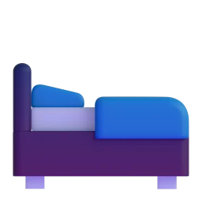
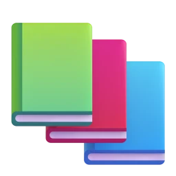
تعب يُربك الحساب
في الأسبوع 6 سهرا حتى وقت متأخر يصنعان 30 كوبًا. وفي اليوم التالي كانت أعينهما تنغلق من النعاس. وردّ يوسف لأحد الزبائن 5 عملات باقيًا بدل عملتين. ونسيت ملك الثلج. قال جدّو: «مع التعب تقع أخطاء صغيرة. والراحة جزء من العمل.» فلعبا الكرة يوم الأحد، وأنجزا واجباتهما، وناما مبكرًا.
الراحة جزء من العمل.
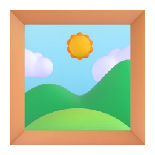
اللعبة الجديدة
صارت الحصّالة ثقيلة. ثم بدأ الجميع في النادي الصيفي يتكلّمون عن لعبة فيديو جديدة سعرها 30 عملة. همس يوسف: «معنا ما يكفي.» نظرت ملك إلى الحصّالة، ثم إلى صورة ماما على باب الثلاجة. وانتظرا. وبعد 3 أسابيع صارت اللعبة نفسها بـ18 عملة. فابتسما، وواصلا الادّخار.
الادّخار يعني تقديم الحلم الكبير على الرغبة السريعة.
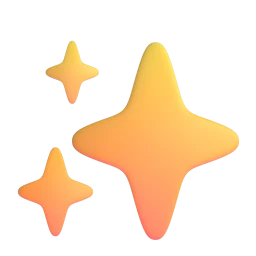
آخر يوم في الصيف
في آخر سبت فتح يوسف الحصّالة، وعدّا كل عملة مرتين: 236 عملة. وثمن هدية ماما 220 عملة. فهتفا: «نجحنا!» ودمعت عينا ماما من الفرح حين فتحتها. وأعطى جدّو كلًّا منهما ملصقًا وقال: «لم تكسبا نقودًا فقط، بل تعلّمتما كيف يعمل المشروع.» وبدأت ملك تخطّط للصيف القادم.
كل عملة لا تُصرف اليوم تقرّب الهدف خطوة.
أفكار جدّو
كل أفكار الحكاية في مكان واحد. وفي اللعبة تصبح كل فكرة ملصقًا.
كل مشروع يبدأ بشيء يريده الناس.
التكلفة هي ما ندفعه لنصنع الشيء.
السعر الغالي يجلب زبائن أقل، والرخيص يجلب ربحًا أقل من كل كوب.
عدّ النقود التي دخلت نصف الحكاية فقط.
الربح = النقود الداخلة − النقود المصروفة.
البقايا التي تفسد نقودٌ تُرمى في سلّة المهملات. وصنع كمية أقل مهارة.
الشكوى نصيحة مجانية.
الثقة مثل الادّخار: تُبنى ببطء وتُصرف بسرعة.
عندما ينسخك أحد، يصبح السؤال: ما الذي يميّزك؟
الراحة جزء من العمل.
الادّخار يعني تقديم الحلم الكبير على الرغبة السريعة.
كل عملة لا تُصرف اليوم تقرّب الهدف خطوة.
دورك: خطة مشروع صغير
تُملأ هذه الصفحة بقلم رصاص. ويكون التخطيط مع أحد الكبار، وشراء المستلزمات معه.
نقود دخلت − نقود صُرفت = الربح
طريقة لعب الانتربرونور الصغير
في اللعبة مشروع صغير خاص بك لصيف من 12 أسبوعًا، تمامًا مثل ملك ويوسف: اختيار المشروع، وتحديد هدف للادّخار، وخطة واحدة كل أسبوع.
اللعب مجاني على adam.ahmedhaz.com/little في أي متصفح. واللعبة تعمل دون اتصال بعد فتحها أول مرة، بالعربية والإنجليزية. ويستغرق الصيف نحو 15 دقيقة.

بداية الصيف
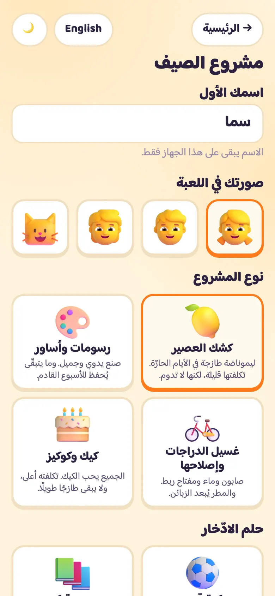
- كتابة الاسم الأول. ويبقى على الجهاز فقط.
- اختيار صورتك في اللعبة.
- اختيار المشروع: كشك العصير، أو رسومات وأساور، أو غسيل الدراجات وإصلاحها، أو كيك وكوكيز.
- اختيار الهدف: كرة قدم (100)، أو مجموعة كتب (160)، أو هدية لماما (220)، أو دراجة جديدة (300).
العدّادات الثلاثة
- نقود: كل ما في صندوقك. الصنع يكلّف نقودًا، والبيع يعيدها.
- طاقة: البيع والسهر يستهلكانها، والراحة تعيدها. تحت 40 يأتي النعاس. ومن 70 فما فوق يُفتح خيار ثالث حكيم.
- ابتسامات: مقدار حب الزبائن لكشكك. السعر المعتدل والجودة الجيدة يرفعانها.
- شريط الحصّالة يوضّح المسافة الباقية إلى الهدف.
خطة الأسبوع
- نظرة إلى طقس يوم السوق. الأيام الحارة تجلب زبائن عصير أكثر، والمطر يقلّلهم.
- اختيار السعر: رخيص أو معتدل أو غالٍ.
- اختيار الكمية. وجدّو يتوقّع عدد الزبائن.
- اختيار نشاط واحد: صنع ملصق، أو تدريب، أو مذاكرة، أو راحة ولعب.
يوم السوق والنتيجة

- مشاهدة الزبائن وهم يصلون، أو الضغط على «هيا نتخطّى».
- قراءة النتيجة: نقود دخلت، ونقود صُرفت، والربح.
- العصير والكيك يفسدان. أما الرسومات وعُدّة الغسيل فتُحفظ للأسبوع القادم.
- إنفاق بعض النقود على شيء ممتع، أو ادّخارها في الحصّالة.
المعضلات والباب الحكيم

- أغلب الأسابيع تأتي بمعضلة صغيرة لها جوابان معقولان، ولكل منهما ثمن.
- مع طاقة 70 أو أكثر يُفتح باب ثالث: الباب الحكيم.
- وبعد كل اختيار يشارك جدّو فكرة تدخل دفتر الملصقات.
الصدى والواجبات والنعاس

- بعض الاختيارات تعود بعد أسابيع، ومعها رقم الأسبوع الذي جاءت منه.
- المذاكرة مرة كل 3 أسابيع على الأقل، وإلا أغلقت ماما أو بابا الكشك أسبوعًا.
- تحت 40 من الطاقة تتمايل الأرقام ويُحسب الباقي خطأً. والراحة تصلح ذلك.
نهاية الصيف

- الوصول إلى الهدف قبل نهاية الأسبوع 12 يعني الفوز به.
- بطاقة التقييم تعطي نجومًا للحساب والعملاء والتوازن والأمانة.
- لا نهايات قاسية. وإذا لم يكتمل الهدف يلخّص جدّو ما تعلّمته ويعرض صيفًا آخر.
المشاريع الأربعة
| المشروع | تكلفة الواحدة | الأسعار | البقايا |
|---|---|---|---|
| كشك العصير | 1 | 2 · 3 · 5 | تفسد |
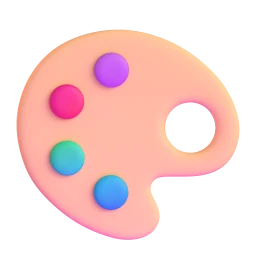 رسومات وأساور | 2 | 3 · 5 · 8 | تُحفظ |
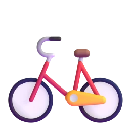 غسيل الدراجات وإصلاحها | 1 | 2 · 3 · 5 | تُحفظ |
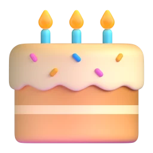 كيك وكوكيز | 2 | 3 · 5 · 8 | تفسد |
نصائح جدّو لصيف ناجح
- صنع كمية قريبة من توقّع جدّو.
- السعر المعتدل بداية جيدة.
- الراحة قبل أن تنزل الطاقة تحت 40.
- المذاكرة مرة كل 3 أسابيع على الأقل.
- الأشياء الممتعة جميلة، لكن ليس كل أسبوع.
كلمات مهمة
ما ندفعه لنصنع الشيء.
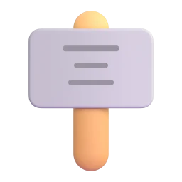
ما يدفعه الزبون مقابل الشيء.
النقود الداخلة ناقص النقود المصروفة.
من يشتري منك.
ما صُنع ولم يُبع.
الاحتفاظ بالنقود الآن من أجل شيء أكبر لاحقًا.
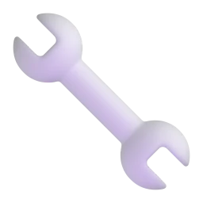
إنفاق النقود على شيء يساعد على كسب المزيد.
من يشارك في العمل وفي الربح.
ملك ويوسف يريدان شراء هدية لماما قبل نهاية الصيف. ومع كشك عصير ودفتر وأفكار جدّو، يتعلّمان ما يعرفه كل صاحب مشروع: التكلفة والسعر والربح والادّخار والأمانة والراحة.
اللعبة مجانية
adam.ahmedhaz.com/little
بلا إعلانات · بلا حسابات · لا شيء للشراء